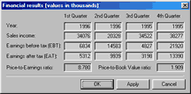

This window provides fundamental financial data of the corporation, such as:
These are given on a quarterly basis.
The program will compute P/E (Price to Earnings ratio) and EPS (Earnings Per Share) indicators from the given data.